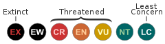

Animals at D-D Farm
Short blurb about D-D Farm animals and how they came to the Farm. We take in orphaned or unwanted wildlife and return them to the wild, and exotic animals as space is available. Many animals come as confiscations from people who have been keeping them illegally. Etcetera.
Endangered Status
Many of the animals at D-D Farm are listed on the IUCN Red List of Threatened Species. This list has nine classifications:
- Extinct (EX) - There is no reasonable doubt that the last individual has died.
- Extinct in the Wild (EW) - Known only to survive in cultivation, in captivity or as a naturalized population (or populations) well outside the past range.
- Critically Endangered (CR) - Considered to be facing an extremely high risk of extinction in the wild.
- Endangered (EN) - Considered to be facing a very high risk of extinction in the wild.
- Vulnerable (VU) - Considered to be facing a high risk of extinction in the wild.
- Near Threatened (NT) - Close to qualifying for or is likely to qualify for a threatened category in the near future.
- Least Concern (LC) - Widespread and abundant.
- Data Deficient (DD) - There is inadequate information to make a direct, or indirect, assessment of its risk of extinction
- Not Evaluated (NE) - A species has not yet been evaluated against the criteria.
Tony came from Versailles MO as the result of confiscations. Hemera is from Oklahoma. She was a gift from GW exotic animal park.
Tony and Hemera

Species: Siberian Tigers
Acquired: 2006
Atika was an ex breeder and came to the farm from a breeder in Arkansas.
Katana was originally an ambassador animal at Sea World in Florida but she became too hissy and was given to DD.
Flame is an Arctic Wolf Hybrid that came from a young man who had him illegally.
Bonnie is from Iowa. She was only fed once a week, and has a bone and hip condition as a result of malnutrition.
Dozer is a Sulcata Tortoise who came from somebody who fed her strictly dog food.
Azland is a Barbery Lion, which are extinct in the wild. He was a gift to Dale from GW exotic animal park in Oklahoma.
IUCN graphic credit: Peter Halasz. Licensed under the Creative Commons Attribution 2.5 Generic license.